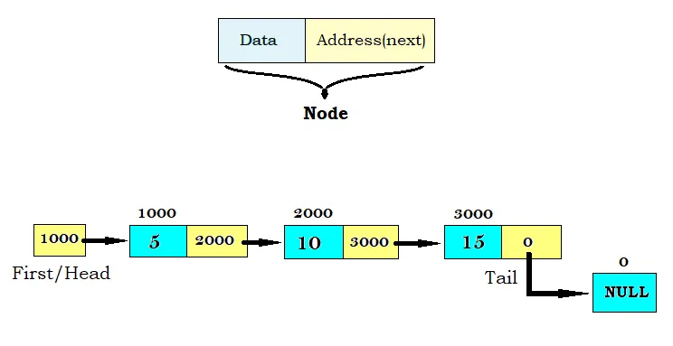

Linked lists are a foundational data structure in computer science that are renowned for their simplicity and flexibility with dynamic use cases. Furthermore, linked lists have a variety of real-world applications primarily in the implementation of abstract data types (ADTs) such as stacks and queues in implementations that require dynamic memory allocation over contiguous memory use. Linked Lists are a linear collection of Nodes that are comprised of data and a reference pointing to the next node in line. In this blog post I’ll provide a brief overview of implementing a Singly Linked List in C# with some common operations such as Insertion, Deletion, Contains and Count.

As mentioned previously, a singly linked list is comprised of a series of nodes, where each node contains two properties: data and a reference or pointer to the next node in the sequence. The list has a "head" node which is a pointer that points to the first node in the list which is used to traverse the list. The last node is often referred to as the “tail” which has a Next pointer that is null, which indicates that we’ve reached the end of the list. This structure allows for elements to be efficiently added or removed without necessitating the reallocation of memory of the entire data structure, as is often required with array-based implementations. Some common operations of a linked list include Insertion, Deletion, Count, Contain, and Find. It is important to note that almost all of these common operations operate in linear time or O(n) since Linked Lists do not have indexes for nodes requiring us to hop down the list any time, we alter the list.
Before we begin our implementation of our singly linked, we need to define what a Node in a linked list looks like, and we can do that in a private class declared in the scope of our Linked List class. Our node class will consist of the two following properties Data (i.e. what's being stored) and a reference to the next node in line.
Now that we’ve defined our Node class and have a means of representing our list let’s go ahead and define our pointer to the first node in the collection or the “head” node which we will make private so it is inaccessible outside the scope of our class. Additionally, we can go ahead and write two methods and a property checking if our list is empty. The “Reset” method will be called whenever the user wants to reset the linked list and our constructor will call Reset where we will set our head Node to null. We do this because our Node class is private and inaccessible to the user which means that our Linked List can only be manipulated via method calls which should make more sense in a minute.
Now that we have a means of constructing our Linked List object we can go ahead and make our first Insertion method “AddFirst” which will add a Node to the beginning of the linked list. We can accomplish this by reassigning the value of our head node to point to a new node with the Next pointer pointing to the previous head node. Considering no iterative actions were required to perform this operation this method operates in constant time or O(1). Additionally, we can go ahead and make an AddLast or Append method which will add a Node to the end of our Linked list which we can accomplish by hopping down our linked list.
We first need to check if the list is empty, if it is we will simply call AddFirst. Otherwise, we’ll need a pointer to hop down the linked list to find the second to last node which will have a null Next property. With this in mind, we can hop down the linked list by setting the value of our pointer to the value of the next Node in line on each iteration of the loop. With this technique and pointer, I’ve named ptr in this case we’ll hop down to the list until we reach the tail of the list where its Next property will be set to null. At the end of the while loop our pointer will be on the tail of the list where we’ll then create and assign its “Next” property to a new Node with the value of Parameter and a Null Next pointer since it’s at the end of the linked list. This method operates in O(n) time since we must iterate through almost every Node in the list to perform this operation.Now with our AddFirst and Append methods, we can make an Add Method that takes the parameter of an index and the value we want to add to our list.
For clarity and to reduce the complexity and error checking required for our method I’ve opted to make the index parameter an unsigned integer so that it will always be a positive integer. In most cases, we want to stop at the node at the index before and reassign its Next property to a new node with the value we want to insert. However, this doesn’t take into consideration when the user of our method inputs an index of 0 so we’ll have to address that in the method. We can do this easily by first checking if the Linked List is empty and the index is not Additionally, if the index is 0, we need to create a new node that points to the previous head and re-assign our head to this new node. equal to 0. In that case, we’ll need to return false immediately as it would be impossible for an insertion to occur.
Now that we’ve handled the edge cases we can focus on the logic of the most common cases where we’ll want to stop at the Node at the index before which we can do by using a counter to count our hops. In the event the user of our method provides an index outside the bounds of our linked list we can simply return false immediately. Alternatively, we could include that in the condition of our while loop however if we take that approach we’d still have to check if the node is null again outside the while loop which is why I opted to do so inside the scope of the while loop. Now once our loop ends our pointer will be at the Node before where we want to insert so we’ll set its Next property to a new Node with the value we want to insert with its Next property being the Node that was previously at the Index we are inserting at.
Now that we have insertion functionality in our linked list, we’ll also want the ability to remove nodes. We can start with the easiest remove method, remove first which we can easily accomplish by re-assigning first to the next node in the list which operates in constant time O(1).
Now we can create a RemoveLast method which we can perform by going to the third to last node where we will reassign its Next pointer to null. However we need to check if the list is empty which in that case we cannot perform any operations so we’ll just return, and then we’ll check if head.Next is null meaning we only have one Node so we can only Remove the First Node which we can do by calling RemoveFirst. we must hop down the entire linked list this method operates in linear time or O(n).
With these rudimentary Remove methods, we can now make a more flexible and complicated remove method which will take the parameter of the value we want to remove as opposed to the index in our add method. Like our AddAt method, we’ll have to handle some of the edge cases before jumping into the core logic of our method. In this case, the only edge cases we need to account for are when the list is empty and the value, we want to remove is the head of our list. We can simply return false if the list is empty and for the other edge case, we can borrow the logic we used in our remove first method. In any other case we’ll simply hop down the linked list and, on each iteration, we’ll check if the next node is equal to the value we want to remove from the list. Once this condition is met, we’ll Reassign the Next Node in line to the subsequent Node thus removing it.
Now that we have rudimentary Insertion and deletion for our Linked List let’s add some finish touches to our Linked List those being a Count property and a Contains method. We can easily make a count property that utilizes a counter increment while iterating to the end of the list. Secondly, we can make a Contains method easily with recursion by hopping down the list checking the data property for our Node to the parameter and returning true as soon as we find what we are looking for.
The last method included in this rudimentary implementation of SinglyLinkedList is a ToString method which returns a simple visual representation of the linked list. We can do this quite easily using the String Builder class and by iterating through the nodes until we hit the null reference at the end of the Linked List and return the string we’ve built.
Singly Linked Lists are one of the most basic abstract data types in the realm of Data Structures and despite rarely being used themselves they are the foundation of understanding all other ADTs. Almost all of the common operations operate in linear time or O(n) due to the lack of indexing which is why they are rarely used and implemented. If you would like to play around with this implementation and tackle some practice problems feel free to visit my GitHub where I have a repository for this implementation where I also solved some practice problems with them.